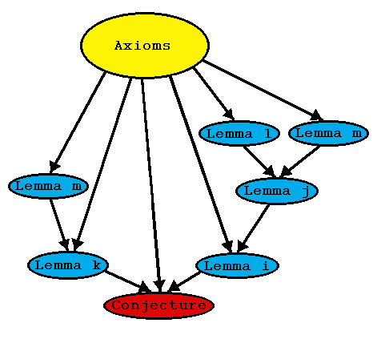

Recursive Lemma Selection

Intuition
- Demand-driven approach
- Select combinations of lemmas
- Copes with arbitrary lemma sets and proof structures
The Algorithm
- Start with conjecture as target
- Form helper sets of increasing size, starting at 0
- If target can be proved from axioms and helper set
- Immediately, iteratively, recursively treat helpers as targets
- Theorem proved when all helpers have been proved
- If a helper cannot be proved, try next helper set
Strengths and Weaknesses
- Robust to nature of lemma set
- Can produce branching proof structures
- Lots of alternative helper sets
- Can be guided by ordering helper sets, using Prophet
- Greedy immediate recursion ignores proof quality